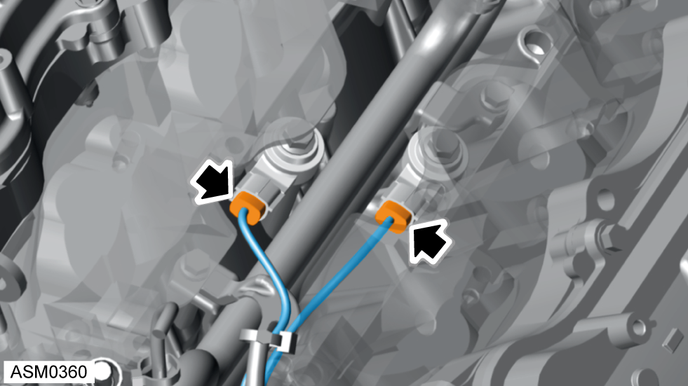
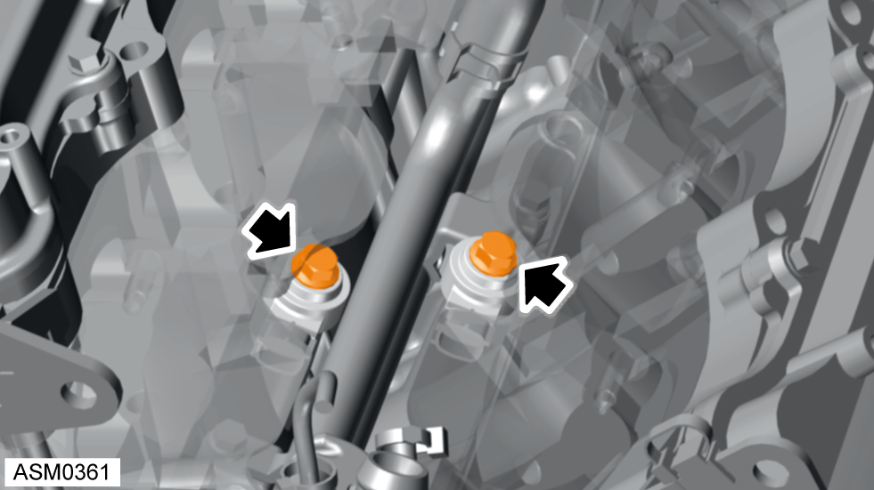
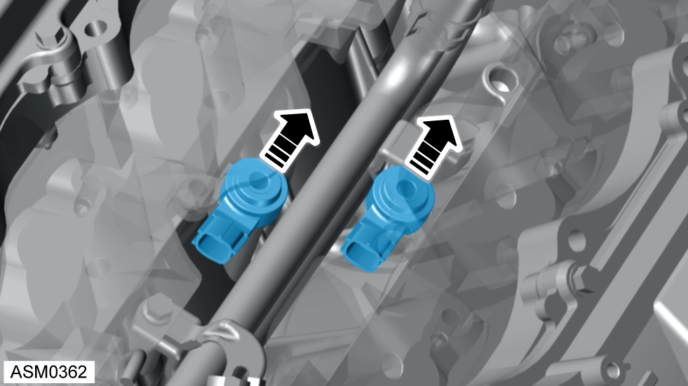

Knock Sensors - V6
Print
Operation Code: 17.06.02-02
Removal
- Disconnect battery. Refer to procedure.
- Remove intake manifold. Refer to procedure.

- Disconnect harness connectors (x2) secured to knock sensors and move harness aside.

- Remove bolts (x2) securing knock sensors to the engine. Torque 20 Nm.

- Remove knock sensors (x2).
NOTE: Knock sensors must be refitted parallel with engine.
Installation
- Installation is the reverse of removal procedure.